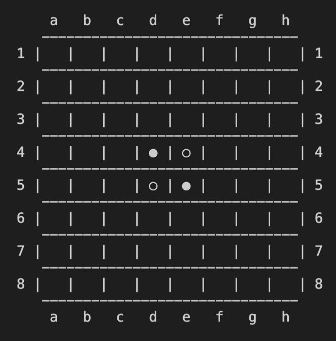

Stage 7 ゲーム進行をデザインする
7-3 入力文字列をマス目の情報に変換する
今回は一度 IO.py に飛んで、ユーザーが入力する文字列をマス目の情報に変換する機能を実装していきます。
#! /usr/bin/env python3
# IO.py
# programmed by Saito-Saito-Saito
# explained in https://Saito-Saito-Saito.github.io/reversi
# last update: 2/7/2020
import config
local_logger = config.setLogger(__name__)
# translate user's input into the index of the square
def InputFormat(s):
if len(s) != 2:
local_logger.info('len(s) == {}'.format(len(s)))
return config.FAILED
elif s[0].isdecimal() and config.InBoard(int(s[0]) - 1) and ord('a') <= ord(s[1]) <= ord('h'):
return [int(s[0]) - 1, ord(s[1]) - ord('a')]
elif s[1].isdecimal() and config.InBoard(int(s[1]) - 1) and ord('a') <= ord(s[0]) <= ord('h'):
return [int(s[1]) - 1, ord(s[0]) - ord('a')]
else:
local_logger.info('OUT OF FORMAT')
return config.FAILED
実際にコーディングするのは、基本的には InputFormat 関数だけです。実際にみていきましょう。
~~~~~~~~~~~~~~~
まずは config をインポートしてロガーを設定します。
import config
local_logger = config.setLogger(__name__)
そしたら関数の中に入ります。引数はユーザーが入力した文字列 s をそのまま使います。
# translate user's input into the index of the square
def InputFormat(s):
このあと s から必要な情報を取り出すのですが、もうみなさん忘れている頃だと思いますので、このゲームでどうやって文字列でマス目を特定するかおさらいしましょう。
マス目を指定するときに使うのは
でした。例えば右上角のマスを指定する際は h1, 初期状態で白の石が置かれている右下のマスは e5 といった具合に。
したがって、そもそも文字列の長さが 2 でないようであれば検討する必要などないと言うことになります。
if len(s) != 2:
local_logger.info('len(s) == {}'.format(len(s)))
return config.FAILED
文字列の長さがあっていれば、あとは１文字目と２文字目がそれぞれ正しい情報を与えているか検討すればいいですね。
~~~~~~~~~~~~~~~
ところで、上の例では h1, e5 のように「column を表すアルファベット → row を表す数字」の順番で書きましたが、これ逆でも良くないですか？

1h, 5e って書くってことやろ
そうです。それでも別にマス目を特定するには困りませんよね？
ということで、数字を先に書いてもアルファベットを先に書いてもいいようにします。それをしているのが次の条件分岐ですね。
elif s[0].isdecimal() and config.InBoard(int(s[0]) - 1) and ord('a') <= ord(s[1]) <= ord('h'):
return [int(s[0]) - 1, ord(s[1]) - ord('a')]
elif s[1].isdecimal() and config.InBoard(int(s[1]) - 1) and ord('a') <= ord(s[0]) <= ord('h'):
return [int(s[1]) - 1, ord(s[0]) - ord('a')]
isdecimal メソッドは文字が数字であるかどうかを判断します。上の elif では１文字目が、下側の elif では２文字目が数字かどうかを判断します。
とりあえず１文字目が数字の場合を見てみましょう。この時、１文字目の数字がちゃんと盤面の column の範囲に入っている必要がありますから、InBoard メソッドを使って判定しましょう。
elif s[0].isdecimal() and config.InBoard(int(s[0]) - 1) and ord('a') <= ord(s[1]) <= ord('h'):
return [int(s[0]) - 1, ord(s[1]) - ord('a')]

InBoard の中身が int とか -1 とかなってるけど
これどうなってんだ？
まず int(s) は char 型の s を int に変換しています。数字の比較をするためですね。
引数の s はプレーヤーが入力したものをそのまま使うことを前提にしています。プレーヤーは 1 から 8 の数字を使って入力しますけれども、コードの中ではリストのインデックスとして用いるので、0 ~ 7 にしないといけません。そのために 1 を引いています。
条件はもう一つ、アルファベットは a から h の 8 文字から選ばないといけません。それを確認しているのがこの部分ですね。
elif s[0].isdecimal() and config.InBoard(int(s[0]) - 1) and ord('a') <= ord(s[1]) <= ord('h'):
return [int(s[0]) - 1, ord(s[1]) - ord('a')]
ord 関数は文字の Unicode をリターンする関数です。
Unicode とは１文字に 1 つ割り振られた番号であり、特にアルファベットについてはアルファベット順に並んでいます。この性質を使えば、「Unicode が a から h の間」という条件で判別できますね。
ここまで条件をクリアすれば、[row, column] の形でリターンします。
elif s[0].isdecimal() and config.InBoard(int(s[0]) - 1) and ord('a') <= ord(s[1]) <= ord('h'):
return [int(s[0]) - 1, ord(s[1]) - ord('a')]
数字の int(s[0]) - 1 はまだいいにしてもさ、
アルファベットの方はなにやってんの？
アルファベットとリストのインデックスはこういう対応をしていますよね。
| a | b | c | d | e | f | g | h |
| 0 | 1 | 2 | 3 | 4 | 5 | 6 | 7 |
先ほども申し上げたように、Unicode はアルファベット順に割り振られていますから、文字の Unicode から a の Unicode を引けば上の表の通りになりますよね。
~~~~~~~~~~~~~~~
2 文字目に数字が来た場合も全く同様にします。
elif s[1].isdecimal() and config.InBoard(int(s[1]) - 1) and ord('a') <= ord(s[0]) <= ord('h'):
return [int(s[1]) - 1, ord(s[0]) - ord('a')]
これ以外の条件ではマス目を特定できませんから、「解読失敗」config.FAILED をリターンしてあげましょう。
else:
local_logger.info('OUT OF FORMAT')
return config.FAILED